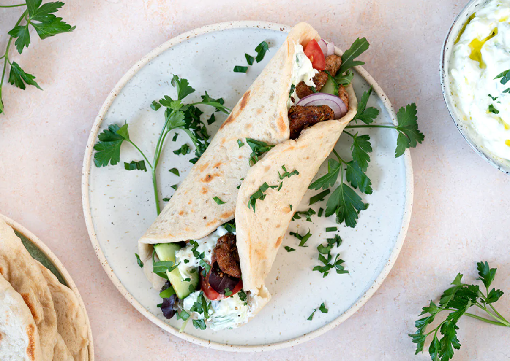

Ingredienser (5 personer):
- 750 g svinekød i strimler (fx nakkefilet eller svinekam)
- 3 spsk olivenolie
- 3 fed hvidløg, finthakket
- 2 tsk paprika
- 1 tsk tørret oregano
- 1 tsk spidskommen
- ½ tsk cayennepeber (valgfrit)
- Salt og friskkværnet peber
- 5 fladbrød
- 1 agurk, revet og drænet
- 3 dl græsk yoghurt
- 1 fed hvidløg til tzatziki, presset
- 1 spsk olivenolie til tzatziki
- Frisk dild eller mynte til pynt
- Evt. salat, tomat og rødløg til servering
Fremgangsmåde:
- Bland olivenolie, hvidløg, paprika, oregano, spidskommen, cayenne, salt og peber i en skål. Vend svinekødet i marinaden og lad det trække mindst 30 minutter.
- Varm en pande op og steg svinekødet hurtigt, så det får god farve og er gennemstegt, ca. 5-7 minutter.
- Forbered tzatziki: Bland revet agurk med græsk yoghurt, hvidløg, olivenolie og lidt salt. Smag til.
- Varm fladbrødene kort på en tør pande eller i ovnen.
- Fordel kød, tzatziki og evt. salat, tomat og rødløg på fladbrødene. Drys med frisk dild eller mynte.
- Rul sammen og servér straks.